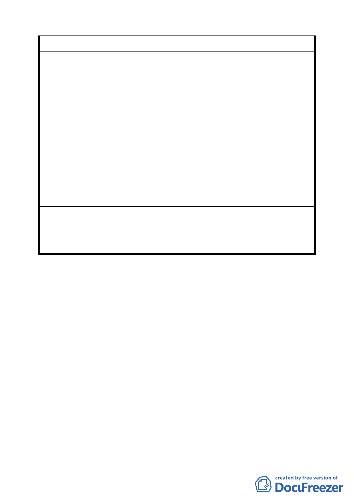

林區『天母白屋』保存區細部計畫案」。
1.有關天母白屋之保存，僅將單棟建築物指定為古蹟是不夠
的，既然本次都市計畫變更案將周邊整體區域化為保存區，
則建議市府應有更積極且具體的作為。例如古蹟東側原有建
物早已拆除，卻長成一塊小小的林地（建議委員至現地勘
建議辦法
查），建議應利用此一情勢，進行整體規劃。
2.建請委員思考就此保存區嘗試建立「容積強制移轉機制」並
透過都市設計管制對基地開發規模或建築型態進行式當規
範，以配合古蹟周邊可留設適當的開放空間（至少保留上述
那塊小林地），修飾當地景觀氛圍，並使保存區內新建建物
與古蹟在景觀上可以取得協調。
本案除原屬第二之一種住宅區之土地，其容積率回復為 160
委員會決議 ％，以及計畫書第 5 頁圖 2 保存區圖例應再作修正外，其餘
依計畫書內容通過。
討論事項四
案 名：變更臺北市內湖區成功路 5 段大湖公園北側部分保護區及
道路用地為社會福利特定專用區主要計畫案
說明：
一、 本件係市府以 94 年 3 月 31 日府都規字第 09412537203、
09412537403 號函送到會，並自 94 年 4 月 1 日起公開展覽三
十天。
二、 法令依據：都市計畫法第二十七條第一項第三款、都市計畫
法第二十二條。
三、 變更位置：詳位置圖所示。
四、 變更理由及內容：詳計畫書。
五、 公民或團體所提意見：如後綜理表。
六